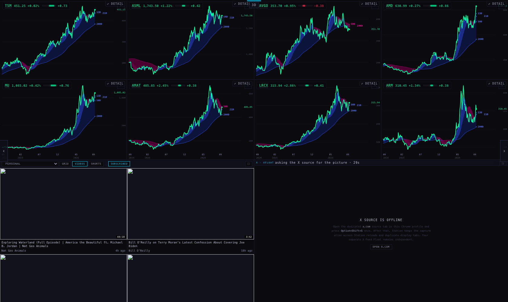
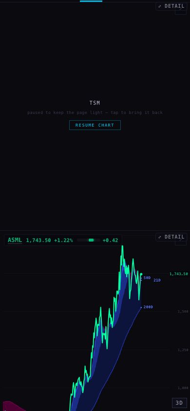
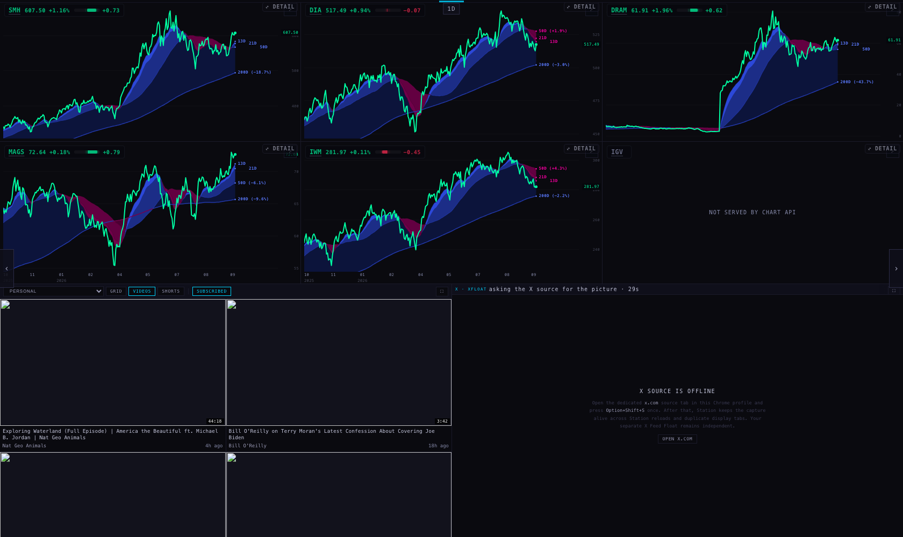
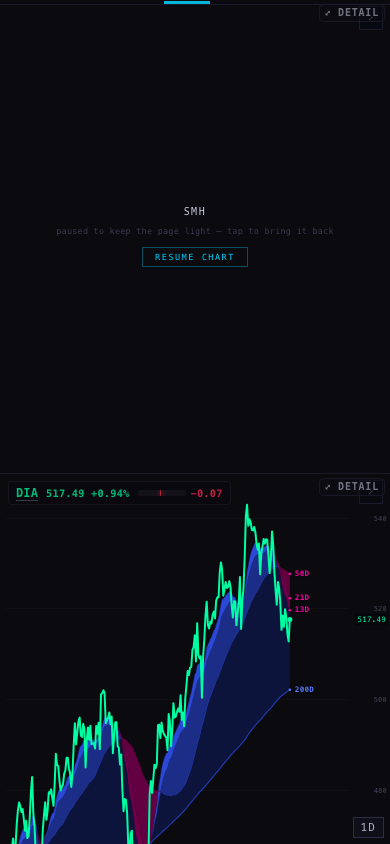
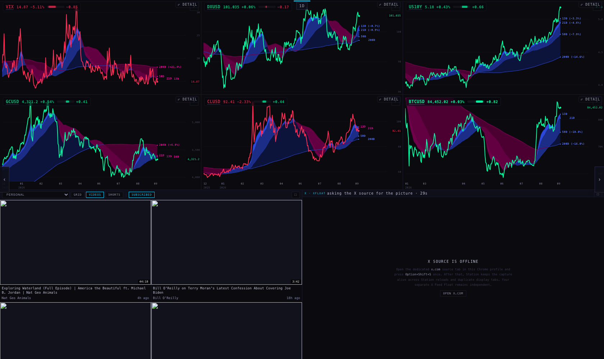
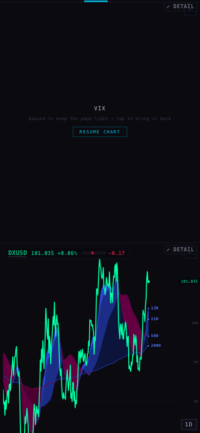
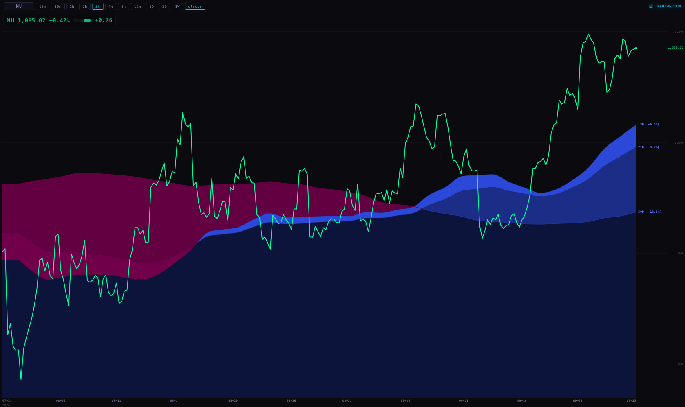
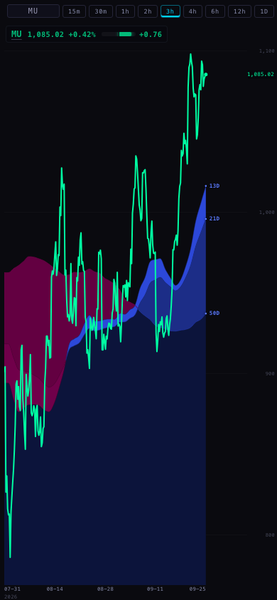
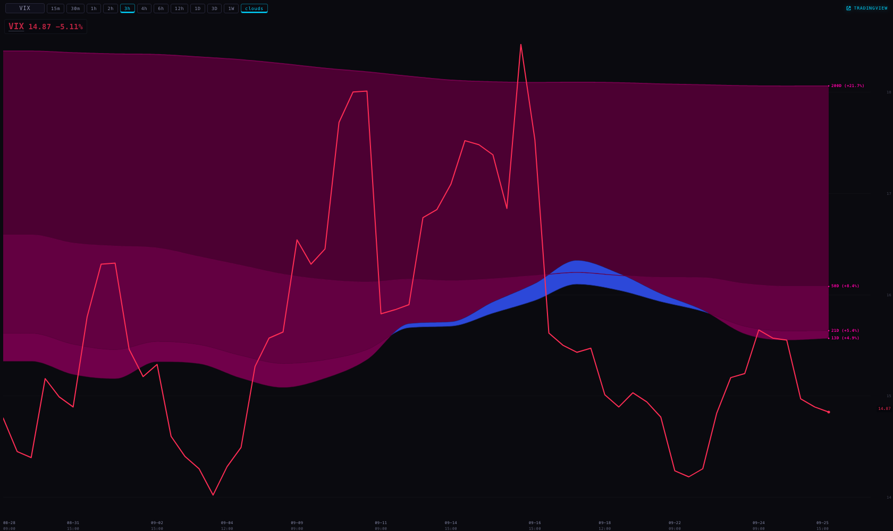
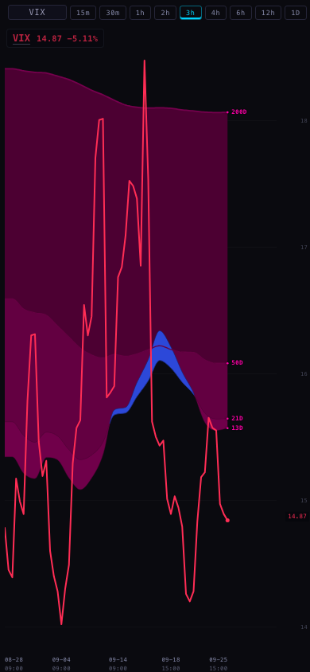

Every Station chart now carries the Hub's Geiger composite bar in its badge, right after the price: a tiny bar and its number, e.g. MU 1,085.02 +0.42% +0.76. Funds and indexes get it too. A name with no reading shows no bar at all.
“What I do really like is the Geiger composite bar at the top left… adding the Geiger bars to the Station charts somewhere small. Very small, very executive.” — Alan, 27 Sep
Built on branch station/geiger-bar-20260927 from the live Station head 38ebc19. Not pushed and not deployed: nothing on the live Station has changed yet.










Every measured bar in these pictures is exactly 48 × 6 px, and its number is the same size as the price (10.3 px on the wall, 13.8 px on a lone 1680 chart). The per-chart readings, colours and fill widths are in shots/receipts.json.
These are the same two owners the Hub's company view uses for its GEIGER COMPOSITE bar (geigerSummaryData → scApplyCandidateGeiger in the Hub's index.html). I read the Hub; I did not change it.
| Names | Source | Checks before a number is shown |
|---|---|---|
| The 364 provider equities, funds included (SPY, QQQ, SMH, DIA, MAGS, IWM, the sector ETFs…) | The chart API's /geiger: Massive provider bars, weighted by your saved Equalizer. The same composite field the Hub draws. | The Equalizer receipt must be the accepted one (f6cf97b5…97ad1), and the full read must carry all 364 names. If either check fails, no bar is shown. |
| The 22 non-equities: ES/NQ futures, VIX, rates, gold, oil, crypto | The retained non-equity daily Geiger row, which the Hub still uses for these names. Only the deck can read it. | The name must not be a provider equity, so the two owners can never overlap. |
One read per page, not one per chart. The deck already knows every chart's ticker. It reads all of their readings together when the page changes (checked every 2 seconds) and otherwise once a minute. It sends the whole set to every chart over the message channel it already uses for prices. In the pictures, each deck page made one /geiger read for its 6 or 8 charts. The all-macro page made none, because its names come from the non-equity row. A chart opened on its own reads just its one symbol, once a minute. A chart inside a page that never answers (for example a workshop page) reads its own after 4 seconds.
Both sources stamp a compute time, so I measured how often each is actually recomputed, from the live stamps over 12 minutes this morning:
| Source | Measured cadence | Dims when older than |
|---|---|---|
| /geiger (equities and funds) | every ~4 min (15:29:10 → 15:33:21 → 15:37:17 → 15:41:25 → 15:45:25) | 5 min 30 s |
| Non-equity row | every 60 s | 2 min 30 s |
The extra 90 seconds is the Station's own delay in picking a reading up: the deck reads once a minute, and the provider client may hold a reading for 30 seconds. So a dim bar means at least one recompute has been missed. A reading with no stamp is never dimmed, because there is no time to judge it by, and its hover text says so.
I measured this the way the RSI-fan work did. A headless browser opened the eight-chart AI 1 page at 1680 wide with rotation paused, and I added up the CPU time of every browser process: first over 45 seconds of loading, then over one steady minute. I ran it four times, alternating between the live Station as it is now (before) and this branch (after).
| Page | Run | Loading (CPU seconds) | Steady (CPU seconds per minute) | Geiger reads, whole run / steady minute | Bars shown |
|---|---|---|---|---|---|
| before | 1 | 0.92 | 0.55 | 0 / 0 | 0 of 8 |
| after | 2 | 0.95 | 0.83 | 2 / 1 | 8 of 8 |
| before | 3 | 1.23 | 0.95 | 0 / 0 | 0 of 8 |
| after | 4 | 1.30 | 0.93 | 2 / 1 | 8 of 8 |
Result: about +0.05 CPU seconds while the page loads, and about +0.13 CPU seconds per minute when steady (average 0.88 after against 0.75 before). Both differences are smaller than the gap between two runs of the same page: the two “before” runs differ by 0.40. So the cost is too small to measure. The page makes one Geiger read for all eight charts each minute, not eight. Raw runs: cpu-runs.jsonl.
A new suite, tests/station-geiger-bar.test.mjs, has 11 tests. They cover: the Hub's scale and fill; the two colours; no zero ever standing in for a missing reading; the age rule for each source; the bar's place in the badge; hiding when a pane changes to a name with no reading; the lone pane reading one symbol and dropping a refused one; one deck read per page and none repeated within the minute; a page change being read at once; and pins that keep both chart copies identical and the Equalizer check in place. I checked that the suite fails when I break the no-zero rule or the once-a-minute rule.
Whole suite: 707 tests, 689 pass, 18 fail. Those are exactly the 18 that already fail on the live head (it was 696 / 678 / 18 before this work). No new failures.